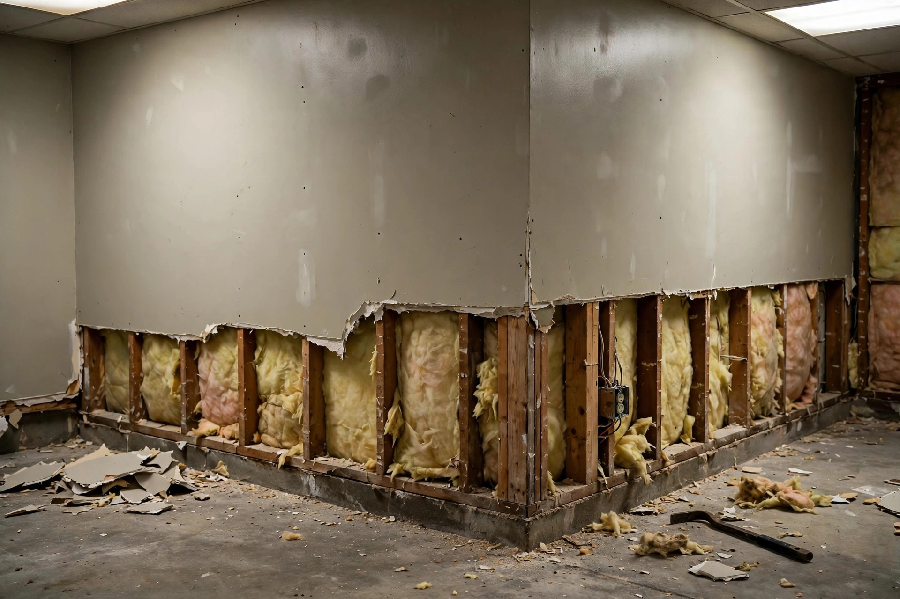
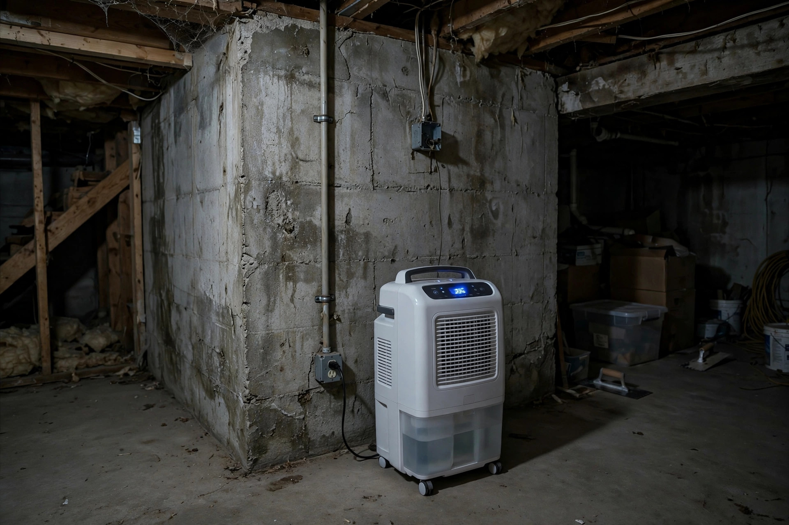
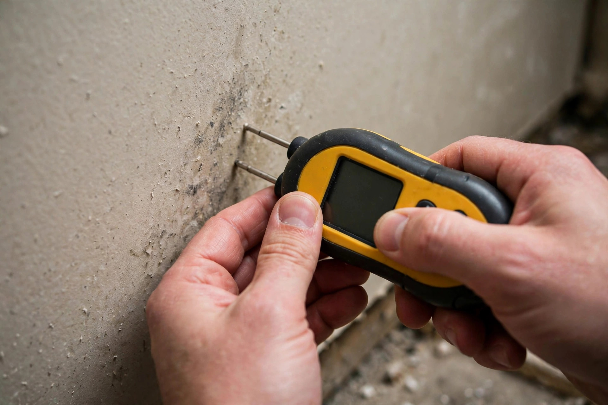

Basement Mold Removal in Boise, ID
Basements sit in cool soil that holds moisture, especially during irrigation season. Mold here usually grows on the back of finished drywall, the bottom plate of framed walls and under carpet — all places you only see once it’s spread.

A finished 1980s basement on Boise’s Bench
A family turns the basement into a teen bedroom. By the second summer the room smells stale and there’s a dark line along the bottom of one exterior wall behind the bed. The concrete wall behind the drywall was never waterproofed.
What basement mold removal covers
Basement jobs combine mold work with moisture control. Without the second part, the first part doesn’t last.
Finished walls
Drywall and fiberglass batts against foundation walls are removed above the visible line, then the cavity is cleaned and dried.
Floors & carpet
Carpet pad on slab often hides growth on its underside. Pad is replaced; the slab is cleaned and checked for moisture.
Storage & contents
Cardboard boxes, books and fabric stored against walls are sorted: clean, HEPA-vacuum, or discard.
Removal follows the containment and cleaning approach in IICRC S520. Basements with standing water should first go through flooded basement cleanup.
What moves the price on a basement job
| Factor | Why it matters |
|---|---|
| Finished vs. unfinished | Bare concrete and open framing are faster to treat than drywall, trim and flooring that must come out. |
| Linear feet of wall affected | Exterior walls are priced by how much has to be cut, cleaned and rebuilt. |
| Moisture correction | Grading, gutters, a sump or a dehumidifier may be needed alongside removal. |
| Rebuild scope | Replacing with moisture-resistant materials (rigid foam, mold-resistant board) costs more up front. |

Basement mold FAQs
Why does my basement get musty in summer but not winter?
Summer air holds more moisture. When that warm air hits cool basement walls and slab, relative humidity near those surfaces climbs — often above 70%. In parts of the valley, irrigation-season groundwater adds to it.
What humidity should my basement be?
Aim for under 50%, and never consistently above 60%. A standalone dehumidifier draining to a floor drain or sump is the most common fix.
Is white fuzz on my basement wall mold?
Not always. Efflorescence — mineral salts left behind as water moves through concrete — looks white and crystalline and dissolves in water. Mold is fuzzy or slimy and grows on organic surfaces like wood or drywall paper.
Can I finish my basement after mold removal?
Yes, once moisture is under control. Rigid foam insulation against the concrete, a gap at the bottom of the drywall and mold-resistant board reduce the chance of repeat growth.
Related services
Find the water before you cut the wall
A moisture check along every exterior wall shows how far it goes.
